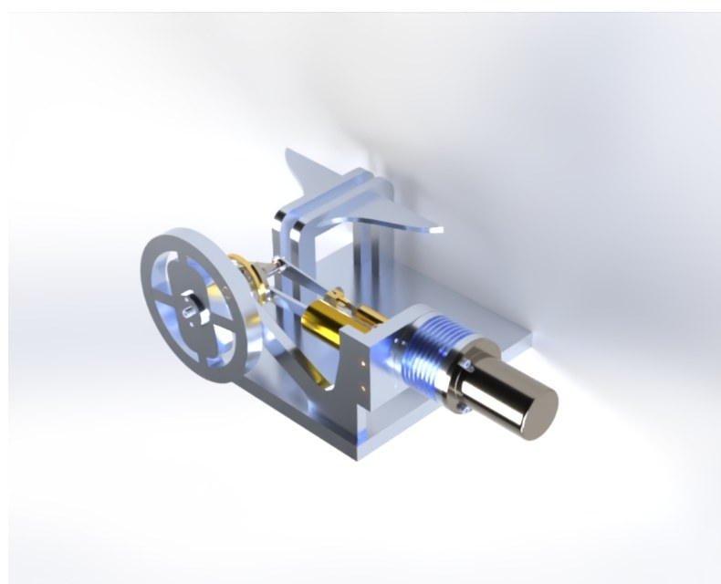
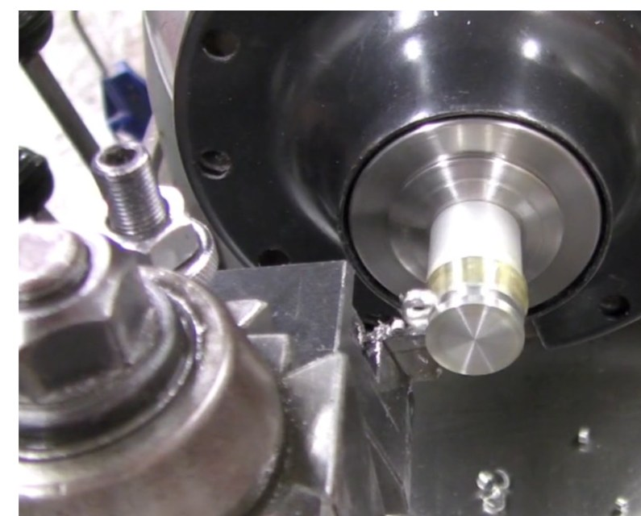
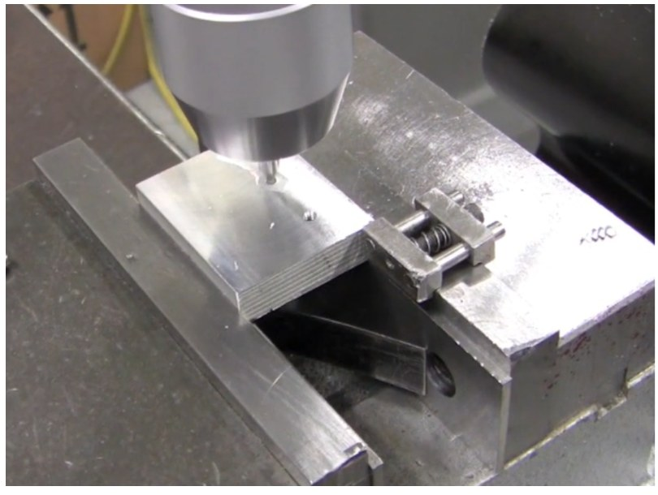
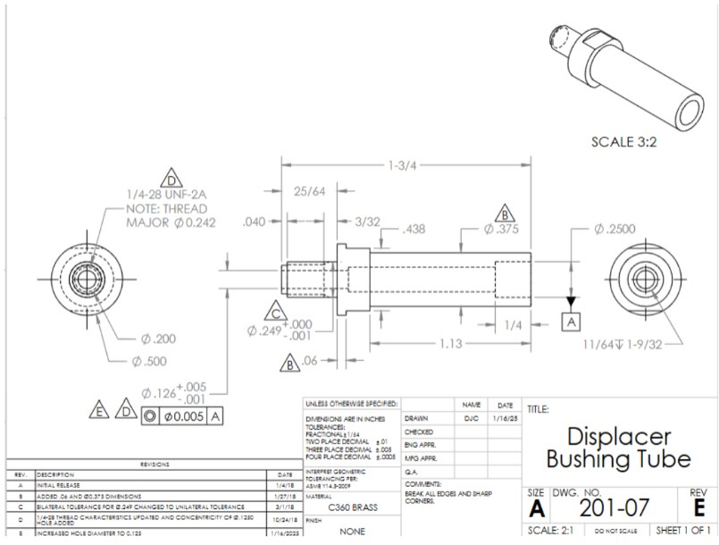
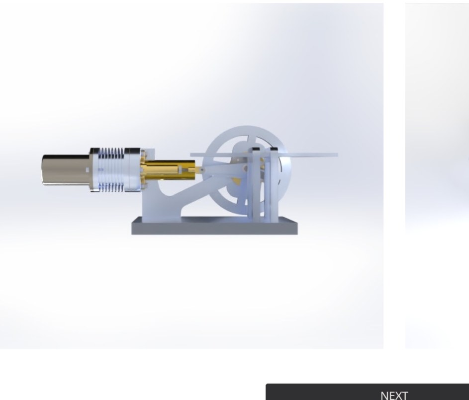
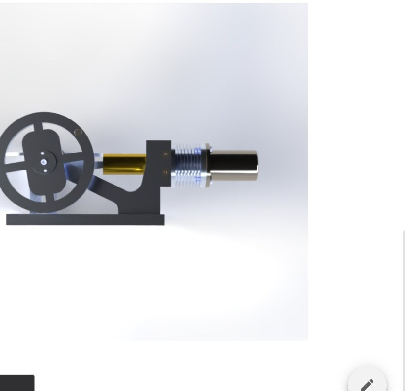

MEAM 2010 · Precision Manufacturing
Stirling Heat Engine
In Penn's MEAM 2010 course, I designed and machined a Stirling engine, assembled it, and measured a top speed of about 1,700 RPM.



CAD and mechanism design.
I modeled the full engine in SolidWorks and used mates to reproduce the motion of the crank, flywheel, connecting links, displacer, and power piston. I also gave the base and flywheel an aircraft-inspired shape while staying within the course dimensions and interfaces.
Tools and skills
- Parametric part and assembly modeling in SolidWorks.
- Functional mates and interference-aware assembly design.
- Precision turning, milling, drilling, boring, and hole-making.
- Tool setup, workholding, feeds, speeds, and chip-control fundamentals.
- Calipers, micrometers, dial indicators, and inspection technique.
- Engineering drawings, tolerances, limits and fits, and GD&T.
Engineering drawings and tolerances.
Each part started with an engineering drawing that specified material, critical diameters, shoulder locations, threads, fits, and geometric requirements. Reading and making these drawings showed me how tolerances affect assembly and how unnecessarily tight tolerances add machining time.

Machining process.
I made the parts with lathe, mill, drilling, and CNC operations. For each setup, I chose datums and workholding, planned the operation order, protected finished surfaces, and measured the part before removing it from the machine.
Assembly and fit.
During assembly, the shafts, bushings, links, flywheel, frame, and thermal components all had to line up with low friction. The CAD model helped me check the interfaces beforehand, but I still needed hand fitting and inspection to get the mechanism running smoothly.


Measured result: approximately 1,700 RPM.
After assembly and final fitting, the engine ran from heat input alone and reached approximately 1,700 RPM. Getting there depended on consistent dimensions, low-friction alignment, and careful assembly across all of the parts.